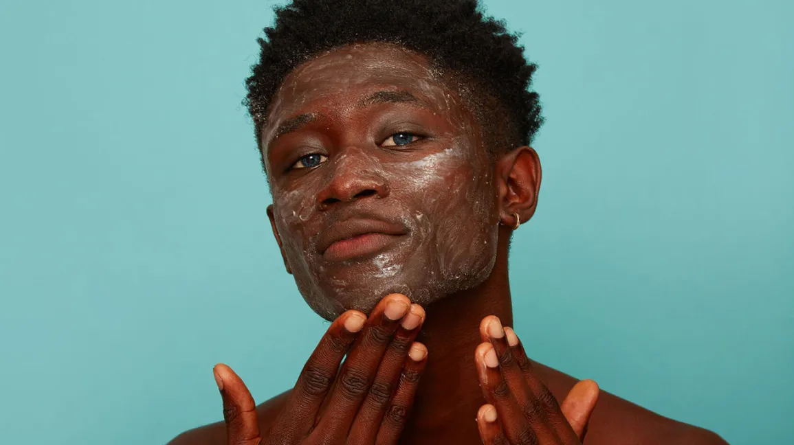

Exfoliating your skin helps remove dead skin cells, unclog pores, and promote skin renewal. Exfoliation can be done with physical exfoliants (scrubs) or chemical exfoliants (products containing alpha hydroxy acids or beta hydroxy acids). However, it's important not to over-exfoliate, as this can irritate the skin.
Skincare, also known as skin care or dermatology, refers to the practices and routines that individuals follow to maintain and improve the health and appearance of their skin. The skin is the body's largest organ and plays a vital role in protecting the body from external elements, regulating temperature, and serving as a barrier against pathogens.
skincare is not just about vanity; it's about maintaining the health and well-being of your skin. It can help prevent a range of skin problems, protect your skin from environmental factors, and boost your confidence. While skincare products and routines can vary widely, it's essential to find a routine that works for your specific skin type and concerns. Consulting with a dermatologist can provide guidance on the best skincare practices and products for your individual needs.
Skincare is a set of practices and routines designed to maintain and enhance the health and appearance of the skin. It involves cleansing, moisturizing, sun protection, and the use of specialized products to address specific skin concerns. Skincare is important for protecting the skin from external factors, preventing skin issues, improving hydration, promoting anti-aging effects, and boosting confidence. It can be customized to individual skin types and concerns and serves as a form of self-care and relaxation. Regular skincare can also help with the early detection of skin issues.